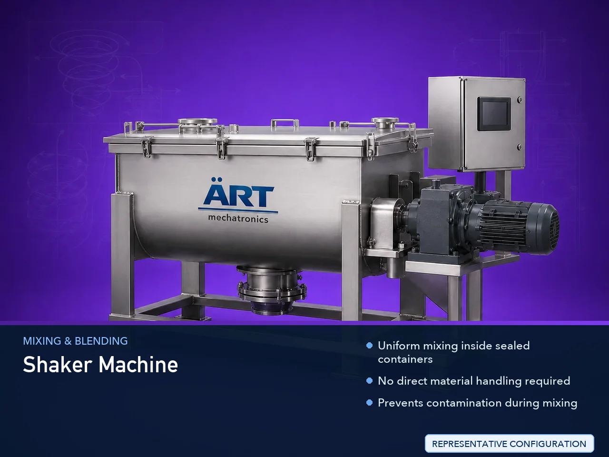

Shaker Machine (Industrial Bottle, Jar & Container Shaking Mixing System)
A Shaker Machine, also known as a Bottle Shaker, Container Shaking Machine, or Industrial Mixing Shaker System, is a specialized industrial equipment designed for mixing, blending, homogenizing, and re-suspending materials inside closed bottles, jars, drums, cans, pouches, and containers.

About the Shaker Machine
The machine works by placing the container inside a specially designed shaking chamber or holding fixture, where it moves in controlled: ✔ Forward–backward motion ✔ Left–right motion ✔ Oscillating motion ✔ Vibratory or reciprocating movement
This continuous shaking action ensures that the material inside the container becomes: ✔ Properly mixed ✔ Homogeneous ✔ Lump-free ✔ Uniformly suspended
Shaker machines are widely used in industries such as:
• Food & beverages
• Pharmaceuticals
• Chemicals
• Paints & coatings
• Cosmetics
• Adhesives
• Lubricants
• Agro chemicals
• Laboratory and R&D industries
where closed-container mixing and contamination-free blending are essential.
The machine is especially suitable for: ✔ Liquid mixing inside bottles ✔ Powder re-suspension ✔ Chemical blending inside containers ✔ Viscous liquid agitation ✔ Color and pigment mixing ✔ Sample preparation and testing
ART Mechatronics offers high-performance industrial shaker machines, engineered for uniform container mixing, vibration stability, hygienic operation, and reliable industrial performance.
One machine, many names
Buyers search for this equipment under many terms — we manufacture all of them:
Working Principle of Shaker Machine
Material inside container gets uniformly mixed and agitated
Types of Shaker Machines
Industries Using Shaker Machine
🍃 Food & Beverage Industry
- Syrups
- Flavor mixing
- Beverage blending
💊 Pharmaceutical Industry
- Liquid medicine mixing
- Suspension preparation
⚗️ Chemical Industry
- Chemical blending inside containers
🎨 Paint & Coating Industry
- Paint and pigment mixing
💄 Cosmetic Industry
- Lotion and cream agitation
🧼 Detergent Industry
- Liquid detergent blending
🌾 Agro Chemical Industry
- Fertilizer and pesticide mixing
🧪 Laboratory & R&D Industry
- Sample preparation and testing
Features & Advantages
✔ Uniform mixing inside sealed containers ✔ No direct material handling required ✔ Prevents contamination during mixing ✔ Suitable for bottles, jars, drums, and cans ✔ Adjustable shaking speed and timing ✔ Heavy-duty industrial construction ✔ Low maintenance operation ✔ Compact and user-friendly design ✔ Energy-efficient performance
Technical Highlights
- Container Type:
- Bottle
- Jar
- Drum
- Can
- Pouch
- Motion Type:
- Oscillating
- Reciprocating
- Vibratory
- Construction: Stainless Steel / Mild Steel
- Capacity: Single or multiple containers
- Operation: Manual / Automatic / PLC-based
- Speed Control: Variable speed system
Turnkey Shaking & Mixing Solutions
ART Mechatronics offers:
- Complete shaker machine system design
- Multi-container shaking systems
- Automation and clamping systems
- Safety enclosure integration
- Installation & commissioning
- After-sales service & AMC
Why Choose Art Mechatronics
- Expertise in industrial mixing and agitation systems
- Customized solutions for container-based mixing
- Heavy-duty and reliable machine construction
- Hygienic and energy-efficient designs
- Proven industrial performance across industries
Applications
- Food & Beverage Processing Plants
- Pharmaceutical Manufacturing Units
- Chemical Processing Industries
- Paint & Coating Manufacturing Plants
- Cosmetic Production Units
- Laboratory & Research Facilities
Related Mixing & Blending machines
Get pricing & specs for the Shaker Machine
Share the product, target capacity, current process and plant location. These details help our engineers discuss the right machine or line configuration.
One partner, from design to start-up
ART Mechatronics designs, manufactures, installs and commissions your Shaker Machine solution with regional presence in India, UAE and Thailand.